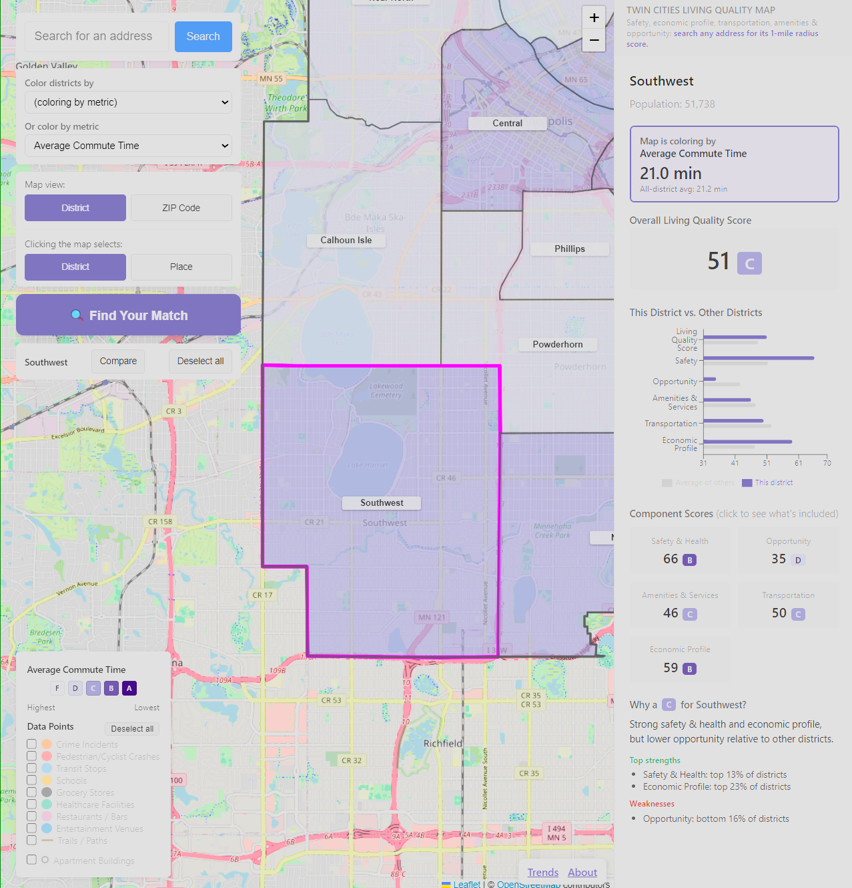

Twin Cities Living Quality Map 2026
An interactive map that scores every St. Paul and Minneapolis district from 0–100 on safety, opportunity, amenities, transportation, and economic profile. A Python pipeline pulls public data from the two cities, OpenStreetMap, the Census, MnDOT, and CDC, and a Next.js map adds address search and multi-year trends.

Next.js
Python
GitHub Actions
Vercel